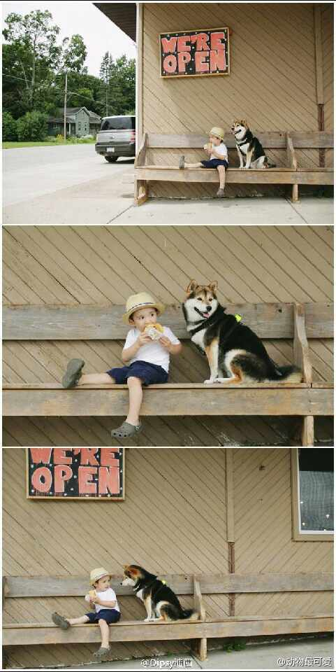
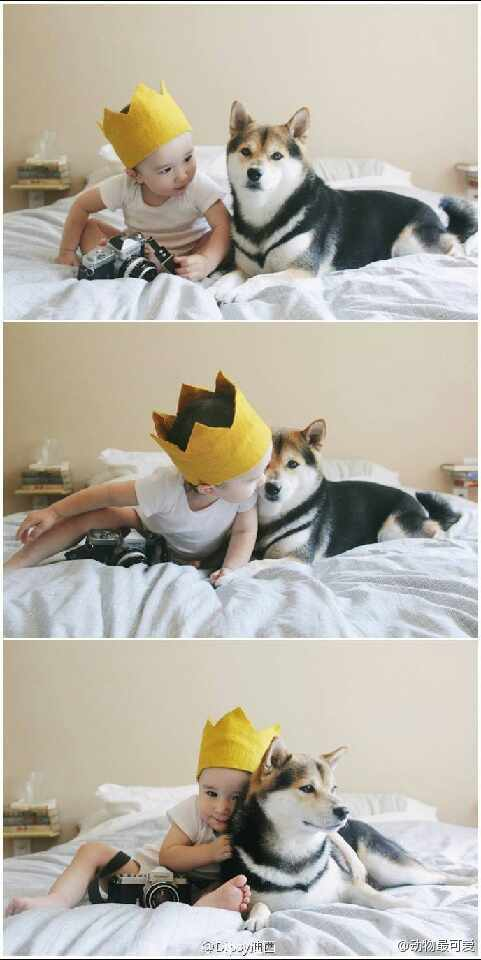
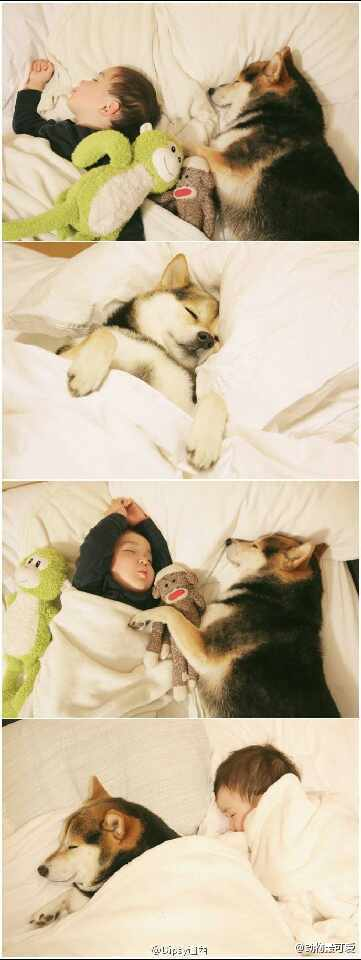

#姣姣#说她知道用什么方法让活动的牙齿掉得更快了，我问什么方法，她说：“吃这盘饺子”，我颇尴尬，因为饺子是我用烤箱做煎饺的试验品，皮硬得像磨牙棒。而明俊破天荒地笑个不停，还罕见地建议我发个微博，他之前可是很反感我写鸡毛蒜皮的事情。姣姣一直很镇定，还很奇怪：“这有什么好笑的？”。
明俊这么乐是他让我自己刷烤盘，被我翻历史旧帐，数落回去，说要不是他天天一锅大米粥当早饭对付，我干嘛这么起劲地翻新花样做早餐。吵架说理他从来不是我的对手唉，不过现在貌似#姣姣#能帮他忙了。@Ada李力:#姣姣#说她知道用什么方法让活动的牙齿掉得更快了，我问什么方法，她说：“吃这盘饺子”，我颇尴尬，因为饺子是我用烤箱做煎饺的试验品，皮硬得像磨牙棒。而明俊破天荒地笑个不停，还罕见地建议我发个微博，他之前可是很反感我写鸡毛蒜皮的事情。姣姣一直很镇定，还很奇怪：“这有什么好笑的？”。
两年前，我根本不用QQ。现在，我把QQ号印到名片上。@CanRan34:别说QQ邮箱了，我都拒绝通过QQ联系工作。工作上最好还是用邮件和电话，首先是去除无聊的寒暄和废话，快速解决问题；其次是内容纯度高易于管理和奖惩问责；另外我也想不出成天挂着QQ滴滴嗒嗒生活娱乐工作混一块儿的人做事儿有多高的效率。
为着文章里夸@刘江总编 的话，转一把。//@老赵:那么都给我点赞去，冲着格式美观分段清晰，至少也顶到老庄的一半吧…… //@子柳: 有理有据，令人性福@老赵:我在 @知乎 回答了【拒绝用QQ邮箱发应聘邮件的求职者是否合理？】：很多道理楼上的朋友们都已经说了，说的都不错，我就不重复了。我就换个角度谈下我的看法。 … 网页链接
《忠犬八公》里的秋田犬。//@Garyff:一样来一只！ //@迈克尔C刘:@动物最可爱:小童和萌犬的可爱生活┃两岁的一茶君出生在美日混血家庭之中，当年从日本远嫁过来的妈妈因为对家乡的思念所以便养了这只日本血统的柴犬Maru，于是当三年后她的小宝宝一茶君出生之后，小犬便寸步不离的时刻陪伴在小伙伴身旁，妈妈也如同拥有了两个儿子一般的开始用相机记录下Maru同一茶的生活点滴..... 